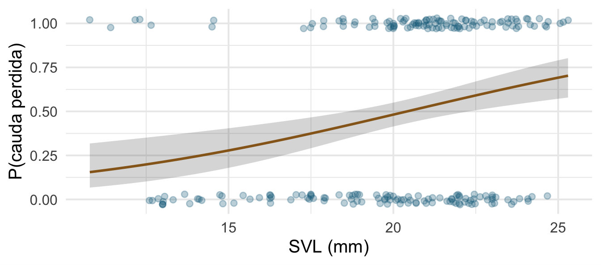

GLM I: verossimilhança, binomial e Poisson
Encontro 5 · Análise de Dados Univariados · PPGBA/UFMS
Diogo B. Provete
23 de setembro de 2026
Onde estamos no ciclo PPDAC
Análise — mas a pergunta “que covariáveis entram” é um retorno à etapa Problema: depende do que você quer estimar, não do que melhora o ajuste.
Onde estamos
Ontem à tarde montamos o vocabulário. Hoje usamos.
GLM = preditor linear (Encontros 2 e 3) + distribuição da família exponencial (Encontro 4) + função de ligação entre os dois.
Nenhuma peça é nova. O que é novo é o algoritmo que as junta: máxima verossimilhança no lugar de mínimos quadrados.
Hoje
- Productive failure
- Máxima verossimilhança — o que o computador procura
- Deviance e teste de razão de verossimilhanças
- GLM binomial: probabilidades e proporções
- Intervalo
- GLM Poisson: contagens e offset
- Interpretar na escala da resposta
- DAGs: que covariáveis entram no modelo
Productive failure
Nos 223 lagartos, Tail_state vale 1 quando a cauda está intacta. Como a pergunta é sobre o evento contrário, no setup recodificamos cauda_perdida = 1 - Tail_state.
Pergunta: lagartos maiores têm maior probabilidade de já ter perdido a cauda?
Em grupos, 10 minutos: que análise? E o que acontece se vocês simplesmente ajustarem lm(cauda_perdida ~ SVL)?
Qual dos dois níveis é o “1” não muda o ajuste — só troca o sinal de todos os coeficientes. Muda o que a frase final diz, e é por isso que vale decidir isso antes de ajustar.
Por que lm() não serve aqui

A reta prevê valores fora de [0, 1]; o resíduo só pode assumir dois valores para cada \(x\); a variância depende da média. Três premissas violadas de uma vez.
1. Máxima verossimilhança
A ideia
Verossimilhança: dado um valor candidato para os parâmetros, qual a probabilidade de observar exatamente os dados que eu observei?
A estimativa de máxima verossimilhança é o valor que torna os dados observados mais prováveis.
Mínimos quadrados é um caso particular: com erro gaussiano, minimizar a soma dos quadrados é maximizar a verossimilhança.
Uma grade de candidatos
y <- lagartos$cauda_perdida
x <- lagartos$SVLc # SVL centrada na média — ver a nota dois slides adiante
log_vero <- function(b0, b1) {
p <- plogis(b0 + b1 * x)
sum(dbinom(y, size = 1, prob = p, log = TRUE))
}
b0_grade <- seq(-0.75, 0.65, length.out = 60)
b1_grade <- seq(-0.07, 0.42, length.out = 60)
grade <- crossing(b0 = b0_grade, b1 = b1_grade) |>
mutate(ll = map2_dbl(b0, b1, log_vero))Cada linha da grade é um par de candidatos \((\beta_0, \beta_1)\), e ll diz o quanto os dados que observamos seriam prováveis se aquele par fosse o verdadeiro.
Vendo a superfície
Arraste para girar. O ponto dourado é o topo; as curvas no piso são as curvas de nível.
O pico é o que o glm() devolve
# A tibble: 1 × 3
b0 b1 ll
<dbl> <dbl> <dbl>
1 -0.0619 0.179 -147.(Intercept) SVLc
-0.05956579 0.17611478 A busca em grade serve só para enxergar. O glm() usa mínimos quadrados reponderados iterativamente, que chega no mesmo lugar com muito menos esforço.
Por que a SVL centrada
Com a SVL crua, \(\beta_0\) é a log-chance em SVL \(= 0\) — um lagarto de comprimento zero, muito fora dos dados. Intercepto e inclinação ficam quase perfeitamente correlacionados (\(r = -0{,}99\)) e a superfície vira uma lâmina diagonal: não dá para enxergar um morro.
Centrar a SVL não muda o modelo — a inclinação, a deviance e o AIC são idênticos. Só muda o que \(\beta_0\) significa: a log-chance no comprimento médio. E aí a correlação cai para quase zero e a superfície fica redonda.
Deviance
\[D = 2\left[\log L_{\text{saturado}} - \log L_{\text{modelo}}\right]\]
Distância entre o seu modelo e um modelo que acerta todas as observações. É a generalização da soma de quadrados residual.
Teste de razão de verossimilhanças
Analysis of Deviance Table
Model 1: cauda_perdida ~ 1
Model 2: cauda_perdida ~ SVL
Resid. Df Resid. Dev Df Deviance Pr(>Chi)
1 222 309.03
2 221 293.82 1 15.214 9.6e-05 ***
---
Signif. codes: 0 '***' 0.001 '**' 0.01 '*' 0.05 '.' 0.1 ' ' 1A diferença de deviance entre dois modelos aninhados segue aproximadamente uma \(\chi^2\) com graus de liberdade igual à diferença de parâmetros. É o análogo do teste F do modelo linear.
2. GLM binomial
Duas formas de resposta binomial
Bernoulli — uma linha por indivíduo, resposta 0/1:
Binomial agregada — sucessos e fracassos por unidade:
A segunda forma é a dos dados de UV: 100 células por lâmina, das quais algumas são eosinófilos. Escrever Eosinophil/Total_Cell ~ ... sem o argumento weights joga fora a informação do tamanho amostral.
Ajustando
Estimate Std. Error z value Pr(>|z|)
(Intercept) -3.5951607 0.98102539 -3.664697 0.0002476316
SVL 0.1761148 0.04786208 3.679631 0.0002335720O coeficiente de SVL está em log-odds por milímetro. Ninguém pensa em log-odds. Vamos traduzir.
Odds, log-odds, probabilidade
| Escala | Valor | Interpretação |
|---|---|---|
| log-odds (\(\eta\)) | \(-\infty\) a \(+\infty\) | escala do preditor linear |
| odds (\(e^{\eta}\)) | 0 a \(+\infty\) | razão sucesso/fracasso |
| probabilidade | 0 a 1 | o que a pergunta quer |
A curva ajustada
novo <- tibble(SVL = seq(min(lagartos$SVL), max(lagartos$SVL), length.out = 100))
pred <- predict(m_bin, newdata = novo, type = "link", se.fit = TRUE)
novo <- novo |> mutate(p = plogis(pred$fit),
lo = plogis(pred$fit - 1.96 * pred$se.fit),
hi = plogis(pred$fit + 1.96 * pred$se.fit))
ggplot(lagartos, aes(SVL, cauda_perdida)) +
geom_jitter(height = .03, alpha = .3, colour = "#1c6e8c") +
geom_ribbon(data = novo, aes(y = p, ymin = lo, ymax = hi), alpha = .2) +
geom_line(data = novo, aes(y = p), colour = "#96661f", linewidth = 1) +
labs(x = "SVL (mm)", y = "P(cauda perdida)")
Construa o intervalo na escala do link
Calcule a predição e o erro-padrão na escala do preditor linear, some e subtraia, e só então aplique a inversa da ligação. Fazer o contrário produz intervalos que saem de [0, 1].
É exatamente o que o código do slide anterior faz: type = "link", depois plogis().
Razão de chances não é risco relativo
prob_18mm.(Intercept) prob_22mm.(Intercept)
0.3952983 0.5693904
razao_de_chances.(Intercept) risco_relativo.(Intercept)
2.0227523 1.4404070 Os dois números diferem, e a diferença cresce quando a probabilidade base é alta. Diga qual você está relatando.
Proporções: os dados de UV
Analysis of Deviance Table
Model: binomial, link: logit
Response: cbind(Eosinophil, Total_Cell - Eosinophil)
Terms added sequentially (first to last)
Df Deviance Resid. Df Resid. Dev Pr(>Chi)
NULL 49 965.39
UV 4 31.151 45 934.24 2.851e-06 ***
Pigmentation 1 278.012 44 656.23 < 2.2e-16 ***
UV:Pigmentation 4 17.965 40 638.26 0.001254 **
---
Signif. codes: 0 '***' 0.001 '**' 0.01 '*' 0.05 '.' 0.1 ' ' 1Separação completa
Quando um preditor separa perfeitamente sucessos de fracassos, a verossimilhança não tem máximo finito: o coeficiente “quer” ir para o infinito.
Sinais: estimativa gigantesca, erro-padrão ainda maior, aviso de fitted probabilities numerically 0 or 1 occurred.
Soluções: regressão logística penalizada de Firth (logistf), ou priors fracamente informativas num ajuste bayesiano — que é o argumento do ROS, cap. 13.
Intervalo
15 minutos.
Na volta: GLM de Poisson: contagens e offset.
3. GLM Poisson
Contagens de parasitas
Estimate Std. Error z value Pr(>|z|)
(Intercept) 0.161 0.271 0.592 0.554
EspeciePhyllopezus_pollicaris -2.140 0.506 -4.232 0.000
scale(CRC) 1.038 0.245 4.237 0.000Coeficiente em log da contagem esperada. Exponenciando:
Phyllopezus pollicaris tem uma contagem esperada 0.12 vez a de Hemidactylus agrius.
Multiplicativo, não aditivo
Com ligação log, os efeitos multiplicam a média em vez de somar. Um coeficiente de 0,7 significa “multiplica a contagem esperada por \(e^{0{,}7} \approx 2\)”, não “soma 0,7 parasitas”.
Isso costuma ser biologicamente mais plausível: o efeito de uma covariável escala com o tamanho da população, não é um acréscimo fixo.
Offset: quando o esforço varia
Se os sítios foram amostrados por tempos diferentes, a contagem bruta não é comparável. Você quer modelar uma taxa.
\[ \log\!\left(\frac{\mu_i}{\text{esforço}_i}\right) = \mathbf{x}_i\boldsymbol{\beta} \quad\Longleftrightarrow\quad \log \mu_i = \mathbf{x}_i\boldsymbol{\beta} + \log(\text{esforço}_i) \]
offset() é um termo com coeficiente fixado em 1 — não estimado. É diferente de incluir log(esforço) como preditora comum.
O primeiro aviso
deviance gl razao
390.896866 50.000000 7.817937 Na Poisson, a deviance residual deveria ser da ordem dos graus de liberdade. Aqui é quase 8 vezes maior. Isso se chama sobredispersão, e é o assunto da tarde.
4. Interpretar na escala certa
A regra
nv <- tibble(D.PARK = seq(0, 25000, length.out = 120))
pr <- predict(m_rk, newdata = nv, type = "link", se.fit = TRUE)
nv <- nv |> mutate(mu = exp(pr$fit),
lo = exp(pr$fit - 1.96*pr$se.fit),
hi = exp(pr$fit + 1.96*pr$se.fit))
ggplot(RK, aes(D.PARK, TOT.N)) +
geom_point(colour = "#1c6e8c", alpha = .7) +
geom_ribbon(data = nv, aes(y = mu, ymin = lo, ymax = hi), alpha = .2) +
geom_line(data = nv, aes(y = mu), colour = "#96661f", linewidth = 1) +
labs(x = "Distância ao parque (m)", y = "Anfíbios mortos")
O que relatar
Nunca só o coeficiente em escala de link. Relate uma comparação concreta, na escala da resposta, com intervalo.
“A mortalidade esperada cai de X para Y indivíduos entre sítios adjacentes ao parque e sítios a 10 km dele (IC 95 %: …).”
Um revisor consegue julgar essa frase. β = −0,0001 ele não consegue.
O pacote report escreve um primeiro rascunho desse parágrafo a partir do próprio ajuste: report(m_bin) devolve modelo, ajuste e cada parâmetro com intervalo, em prosa. É ponto de partida, não produto: sai em inglês, no formato da APA, e não sabe qual comparação é a biologicamente interessante. Você edita.
5. Que covariáveis entram
A pergunta que a estatística não responde sozinha
O glm() aceita qualquer conjunto de preditoras. A escolha é sua, e ela decide se o coeficiente significa alguma coisa.
Controlar por mais variáveis não é sempre melhor. Há variáveis que, incluídas, introduzem viés onde não havia.
Três papéis, três decisões
A seta grossa, azul, é o efeito que você quer estimar. As outras cores dizem o que fazer com cada caminho:
- Precipitação é uma confundidora: causa as duas pontas → controlar.
- Detecção é um colisor: é causada pelas duas → não controlar.
Colisor: o viés que você cria

Área e riqueza são independentes por construção. Condicionar na detecção cria uma associação negativa do nada.
Na prática
{ Precipitacao }Lendo a saída: o único ajuste necessário é Precipitacao. E repare no que não está lá: Deteccao é colisor (Area → Deteccao ← Riqueza), e condicionar nela criaria associação onde não existe.
Desenhe o DAG antes de rodar o modelo. Ele diz o que incluir — e a resposta quase nunca é “tudo”.
E por que seleção automática não resolve
Um procedimento stepwise escolhe variáveis por ajuste, não por papel causal. Ele inclui colisores com prazer, porque colisores melhoram a predição dentro da amostra.
Predizer e estimar um efeito são objetivos diferentes, e pedem modelos diferentes. Voltamos a isso no Encontro 9.
Fechamento
O que fica de hoje
- GLM ajusta por máxima verossimilhança; deviance faz o papel da soma de quadrados.
- Binomial para 0/1 e proporções; use
cbind(sucesso, fracasso). - Poisson para contagens;
offset(log(esforço))para taxas. - Construa intervalos na escala do link e depois transforme.
- Relate comparações na escala da resposta, não coeficientes crus.
- Que covariáveis incluir é uma pergunta causal, não estatística.
Prática (o resto do bloco)
- Ajuste um GLM binomial ou Poisson nos seus dados.
- Traduza cada coeficiente para a escala da resposta.
- Faça o gráfico da curva ajustada com banda de incerteza.
- Calcule deviance residual / graus de liberdade. Está perto de 1?
- Desenhe o DAG do seu sistema e verifique se as covariáveis do seu modelo são as que ele recomenda.
Para a tarde
Leitura: Análises Ecológicas no R, cap. 8, seções sobre Poisson e quasi-verossimilhança.
À tarde: o que fazer quando a razão do slide 22 dá 7,8.
Referências
- Agresti, A. 2015. Foundations of Linear and Generalized Linear Models. Wiley.
- da Silva, F.R.; Gonçalves-Souza, T.; Paterno, G.; Provete, D.B. & Vancine, M.A. 2022. Análises Ecológicas no R. NUPEEA. — o fluxograma conectando variáveis, no cap. 2, é este mesmo raciocínio em português; cap. 8 para os GLMs.
- Gelman, A.; Hill, J. & Vehtari, A. 2020. Regression and Other Stories. Cambridge University Press. Cap. 13 (Logistic regression), 14 (Working with logistic regression) e 15 (Other generalized linear models).
- McElreath, R. 2020. Statistical Rethinking, 2ª ed., cap. 5 — The Many Variables & The Spurious Waffles, na versão em
brmsde Kurz: associação espúria, relação encoberta e DAGs. - Zuur, A.F. et al. 2009. Mixed Effects Models and Extensions in Ecology with R. Springer.
- Arif, S. & MacNeil, M.A. 2023. Applying the structural causal model framework for observational causal inference in ecology. Ecological Monographs 93:e1554.
- Gelman, A. et al. 2026. Bayesian Workflow. Chapman & Hall/CRC. Cap. 7, “Prediction, generalization, and causal inference”.
Análise de Dados Univariados · PPGBA/UFMS · 2026/2